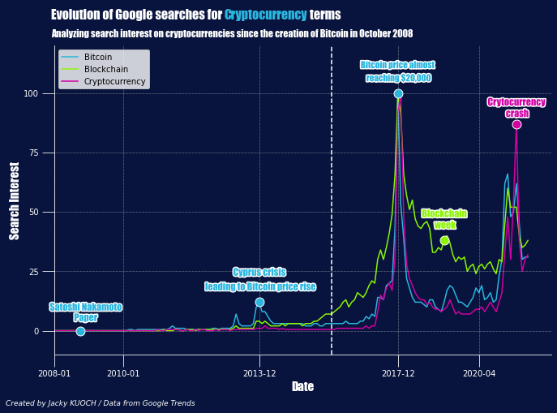

October 31st 2008. At the depth of the financial crisis, Satoshi Nakamoto published a paper titled Bitcoin: A Peer-to-Peer Electronic Cash System. In these papers, Nakamoto laid out the concept for Bitcoin as a decentralized, digital currency. Being a decentralized means there is no single administrator but rather a public ledger of transactions that anyone can store on their computer.
On January 3, 2009, the bitcoin network came into existence when the first block of the blockchain, called the genisis block, was mined. A week later, the first transaction took place and the machine was fired up.
Prepare the ground for future cryptocurrencies
Bitcoin is the pioneering cryptocurrency and hence the most popular one among the the world. However, back in time, for the first few months of its existence, it was obtainable only by miners validating the Bitcoin blockchain. These individuals, who volunteer their personal computing power to the network to keep it running, are paid in Bitcoin and have a say in new protocols that are adapted to the blockchain network.
Once Bitcoin became available on exchanges in 2010, it became easier to buy, sell, trade and store. It could now be priced against the U.S dollar. Bitcoin has become notorious for price swings that often make news headlines and grab the attention of financial traders. Despite that, many believe that this leading digital currency is here to stay. While working on improving the code behind Bitcoin's blockchain, miners and coders started to build other networks like Ethereum and Litecoin.
Back in the day when Bitcoin was introduced to the general public, people didn't understand its underlying technology: blockchain. Even though the technology may still be unknown for some, more people understand it nowadays and can make use of it. Bitcoin was a real catalyst for the democratization of the blockchain and therefore the development of new cryptocurrencies. But before anything else, at this time Bitcoin was still not as popular as today. Indeed, back in 2010, Bitcoin's value was fluctuating from US$0 to US$250. It's only in 2016 that the Bitcoin's value and popularity sustainably started rising.
On this previous plot, we easily how 2016 was a turning point for the Bitcoin and cryptocurrencies in general. Since that year, Bitcoin, cryptocurrencies and blockhain have always been a trending topic on Google searches and even reached the number one trending searches when Bitcoin almost hit $20,000 in late 2017.
What are Altcoins ?
Altcoins are alternative cryptocurrencies that were launched after Bitcoin's success which are alternative to the Bitcoin currency. With the wider base of cryptocurrencies available on the market, more individuals were brought in and consequently increased cryptocurrencies' perceived value. Most famous altcoins include Ethereum, Litecoin, Ripple or Dogecoin. Those cryptocurrencies have often tried to present themselves as modified or improved versions of Bitcoin

As we see on the plot, Son almost always scored more goals than he was expected to do since his last season at Leverkusen. From what we see, first season at Tottenham (2015-16) was not an easy one as Son only scored 4 but that is due to the fact that he was not a regular starter during that debut season at Spurs. However, the following season, the South-Korean produced a spectacular season with 14 Premier League goals, almost the double of xG predicted for the winger. Since this season, Son's total number of goals never fell under a double-digit figures and always outperformed the expectations despite the changes in coaching staff and teammates.
One of the best wingers in Europe
Although many changes happened in Son's career, the South Korean still found a way to improve his game. Among these changes, we can mention Tottenham's move from their historical stadium of White Hart Lane to the freshly built Tottenham Hotspur stadium or the appointment of José Mourinho as Spurs manager following Pochettino poor start to the 2019-20 season. When speaking of Son, who can forget his memorable pursuit of military service exemption. Indeed, South Korean citizens are required to perform a 21 months compulsory military service between the ages of 18 and 28. Fortunately, Son led the South Korean national team to the gold medal in 2018 Asian Games, after many tries, which guaranteed the entire squad's exemption from military service.
While being captain of the South Korea national team, Son also plays a major role at Tottenham where he became, through hardwork and perseverance, a fundamental key player. A player capable of playing in any forward position with an explosive pace, a clinical finishing but also the ability to provide assists for teammates. Let's take a look at a stats comparison of Son versus the best European wingers and during the 2020-21 season. I collected statistics demonstrating his goalscoring, shooting, passing and playmaking abilities and looked at where Son stands among the very best.

When looking at his Goalscoring per90 stats, we see that Son is pretty good compared to the others as his percentile scores are all above 70 except the Expected Goals (xG) which actually shows how impressive this season was for the South Korean and how much he outperformed the expectations. His Goals/Shots ratio is impressive as he ranks at a 99 percentile score which makes him almost the best forward in Europe in terms of Goals per Shots confirming how lethal is Son in front of the goal.
Because, as we look at the Shots & Assists percentiles, we see that Son is not a forward taking a lot of shots compared to the others but he still managed to make it to a 70 percentile score in terms of Goals scored. He stands 96 in percentage of Shots on Target, meaning that Son is really precise when shooting and looks for other options when he believes he doesn't have a chance to score. Indeed, having a look at his Assists percentile score, he gets the same score that he gets in Goals, which is a 70 percentile score. Son has always been regarded as a fanstastic skilled player and these two stats show how true this is.
We just said that Son is a clinical finisher, at ease with the ball but also good at finding his teammates. His successful dribbles percentage confirms that statement. However, he is not the best at creating Shot actions and Goal actions. As we mentionned Son is able to assist his teammates but in the past, situations happened during which he kept his head down, ran at goal and took a shot, ignoring therefore his teammates. He worked on that during this season, where he delivered no fewer than 14 assists even though he is not known for his passing as his passing completion percentage has hovered around 80% during his time at Spurs. With José Mourinho's appointment, Son became even more important in the system explaining why he has so many Key Passes (KP).
One of the best Asian player in history
Sonny has emerged as one of the Premier League's most prolific forwards over the past seasons. While being one of the best, he is still gaining depth in his skillset as his journey continues. A journey allowing him to be regarded as one the best Asian players in European football history. He is now a global brand able to pique worldwide brands' interest and is considered an icon in his home country and in Asia.
To see where Son stands in history, I gathered data about the best East-Asian players in history regarding goal involvements meaning: goals and assists. The players include:
- Shinji Kagawa, the Japanese midfielder who played for Borussia Dortmund and Manchester United. Described as a technically gifted player with a really good sense of passing and positioning. His abilities make him a key player in a playmaker role where he can distribute and score goals himself. Kagawa holds the record for most appearances and goals by a Japanese player in UEFA club competitions.
- Keisuke Honda, the versatile Japanese attacking midfielder known for his accuracy from bending free-kicks, powerful striking and dribbling skills. Honda has played for many clubs around the world, but his ability to play as a winger, a false nine or as a deep-lying playmaker allowed him to play for CSKA Moscow and Milan.
- Shunsuke Nakamura, Japanese attacking midfielder. Nakamura played in Europe with Espanyol, Celtic and Reggina. At Celtic, he became one of the best Asian players to have ever played in Europe; nominated for the 2007 Ballon d'Or, named Scottish Player of the Year and SFWA Footballer of the Year. Nakamura has 98 caps and 24 goals for the Japanese national football team.
- Shinji Okazaki, the Japan national team top active goalscorer and third all-time in team history with 50 goals. The forward played most of his career in Europe in clubs like VfB Stuttgart, Mainz 05 and obviously Leicester City where he won the Premier League after a wonderful run where the Foxes beat all the expectations.
- Park Ji-sung, the most successful player in Asian history, having 19 trophies in his career. Born in South Korea, the midfielder was able to play anywhere across the midfield and was known for his exceptional fitness level, discipline, work ethic and off-the-ball movement. These qualities made him a key player in Manchester United where he won 4 Premier League titles and a UEFA Champions League. Often considered as one of the most underrated player in history, Park was the perfect team player willing to sacrifice himself to create spaces for the likes of Ronaldo and Rooney. The latter said that Park was as important to the Man United side as he and Cristiano were.
- Hidetoshi Nakata, widely considered to be one of the greatest Japanese players of all time. The midfielder, played most famously for AS Roma, was known for his technical ability, agility, vision, passing, and his ability to make attacking runs into the penalty area and score goals.

At age 28, Son already has 221 direct goal involvements with 151 goals and 70 assists. Looking at the total goal involvements at different ages for these players, Son really stands out as he is the only one above the 150 GI mark even though he is only 29 now. If the South-Korean can maintain his overall output means, he could reach levels that will be hard to match for the upcoming Asian footballers.
According to the data, Son is therefore on course to become the best Asian player in history. Unfortunately, his lack of trophies tarnishes his resume. Son has been starved of trophies to this point in his career. Son could reach the heights of players like Park Ji-sung or Kagawa who won many trophies at a club level but to do so, he needs silverware which will take him to the next level in his career.
On July 23, Sonny has signed a new four-year contract with Tottenham, which will run until 2025. Let's hope that the South-Korean will be able to lead the Spurs to a title and finally fill his trophy room.